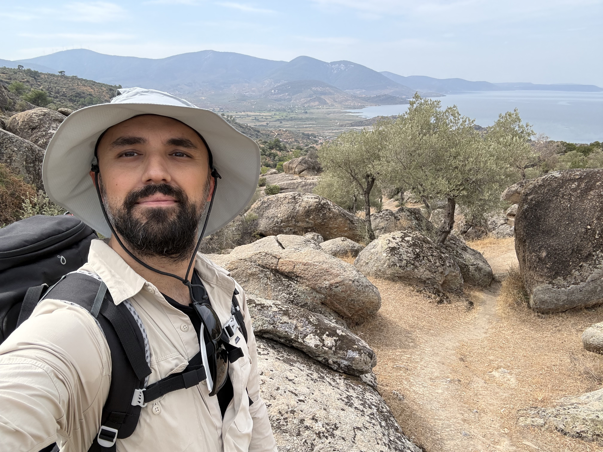

Engineering
the self.
The same analytical discipline that drives field engineering extends beyond the lab — into endurance, exploration, and the quiet optimization of a well-examined life.

Global Perspective
Traveling isn't just about new places — it's about understanding the operating systems of different minds. Fieldwork across MEA and CIS taught me that the best engineering solutions are completed not only with technical data, but with cultural empathy.
Trail Running
Running on uncertain terrain is a form of problem-solving. Navigating unpredictable trails builds the same muscle used to stay calm in an industrial crisis — the ability to move forward with incomplete information, and to keep moving anyway.

System Optimization
I approach the human body as a system analyst. Studying nutritional biochemistry and biomechanics as a discipline — not a hobby — the same data-driven rigor applied to industrial water chemistry, applied inward.